حوادث واسعافات
20 نصيحة.
1

عندما يكون جريح فاقد الوعي فإن وضعه على جابنه الأيمن هي الوضعية الصحيحة. إذن هذه الوضعية صحيحة.
2
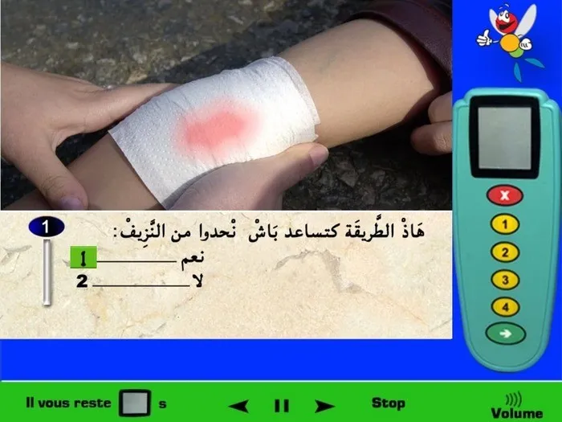
وضع ضمادة على الجرح يساعد على عدم خروج مزيد من النّزيف وتساعد الضمادة في إيقاف النّزيف.
3
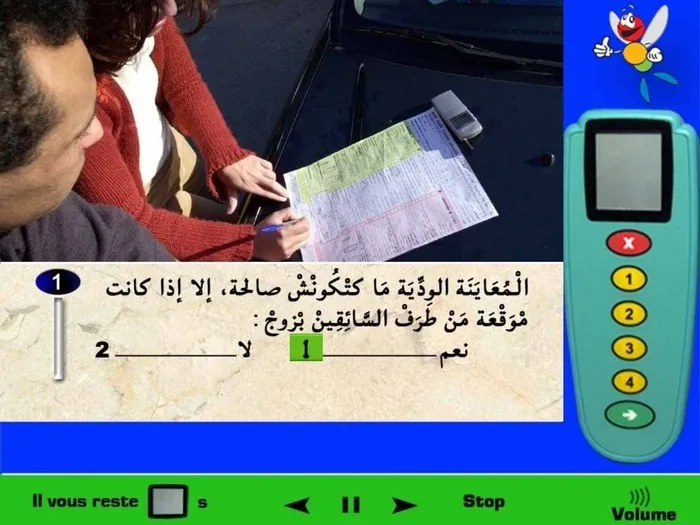
من بين الشّروط التي من الواجب أن تتوفر في المعاينة الودّية لكي تكون صالحة هي أن تكون موقّعة من طرف السائقين 2، وهذا التوقيع هو اعتراف لما جاء في المعاينة الودّية، لذلك إذا لم يوقَّعْ سائق على المعاينة الودّية بعد ملئها لن تكون المعاينّة الودّية صالحة.
4
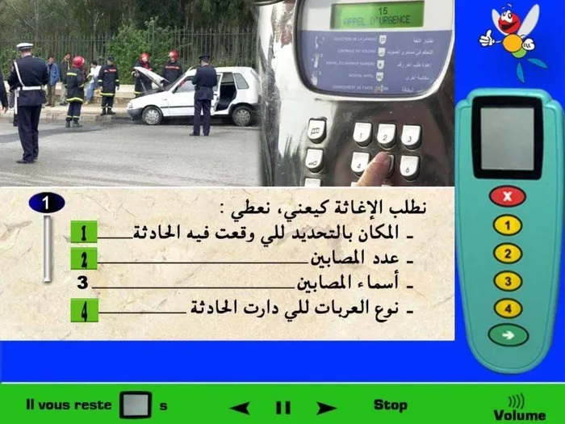
عندما أقوم بطلب الإغاثة عن طريق الهاتف فإنني أقوم بإخبار الجهات المسؤولة عن المكان بالتّحديد الذي وقعت فيه الحادثة لكي يتمكنوا من الوصول إلى مكان الحادث، وكذلك عدد المصابين في الحادثة الطّرقية، وأقوم كذلك بالإخبار عن نوع العربات التي في الحادث. (أسماء المصابين لن يفيد في أول الامر الجهات المسؤولة، سوف تعرف أسمائهم عندما تصل إلى مكان الحادث).
5
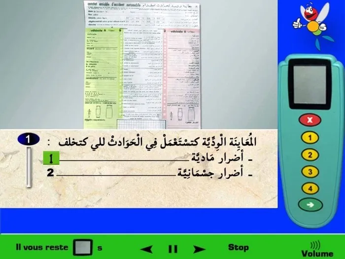
المعاينة الودّية نقوم باستعمالها فقط عند حدوث حادثة سير وتكون الخسائر مادية فقط، أي الأضرار التي تحدث للعربات، ولا نستعملها عندما تكون هنالك حادثة خلَّفت أضرار جسمانية لشخص أو أشخاص ما.
6
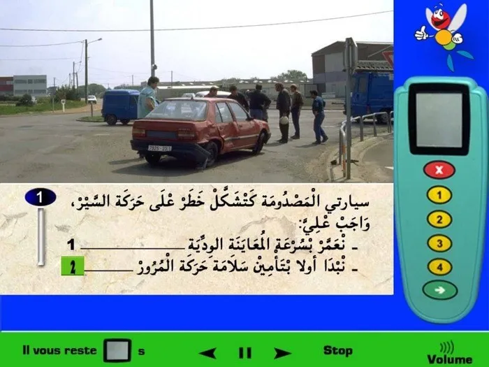
إذا وقعت حادثة طرقية فإنها سوف تتسبب في خطر في حركة السّير، لذلك فإن أول شيئ أقوم به عندما تكون سيارتي مصدومة أبدأ أولا بالتّنبيه لمكان الحادث لكي ينتبه السائقون الاخرون لذلك ولا أتسبب بحوادث طرقية أخرى.
7
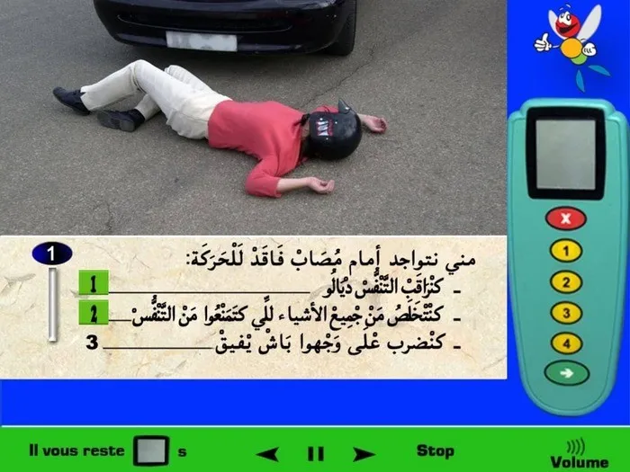
عندما أتواجد قرب حادثة سير وتكون سيارات الإسعاف لم تصل بعد، فيمكنني تفقد تنفس المصاب هل هو يتنفس أم لا، وإذا كان مثلا يرتدي خوذة فأقوم بفتح الغطاء فقط لكي يستطيع التنفّس ولا أقوم بإزالة الحودة لأنه يمكن أن يكون مصاب، لذلك لا أقوم أبدا بفعل شيئ يشكل خطر على حياته أكثر. ولا أقوم أبدا بضربه على وجهه لكي يستيقظ لأن هذا الفعل خاطئ لمصاب فاقد الوعي.
8
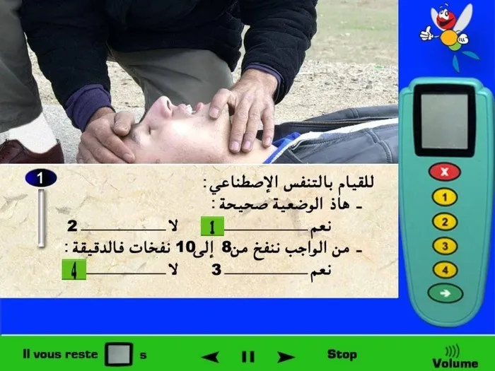
أولا التّنفس الاصطناعي هي� أي� طريقة� لمساعدة أو تحفيز عملية التنفس ويجب على كل سائق معرفة طريقة عملها، بالنسبة للوضعية الظّاهرة في الصورة فهي وضعية صحيحة للقيام بتنفّس اصطناعي، بالنسبة لعدد النّفخات فنقوم بنفخ من 12 إلى 15 لنفخة في الدقيقة بالنسبة للناس الكبار ومضاعفة عدد النفخات بالنسبة للصغار.
9
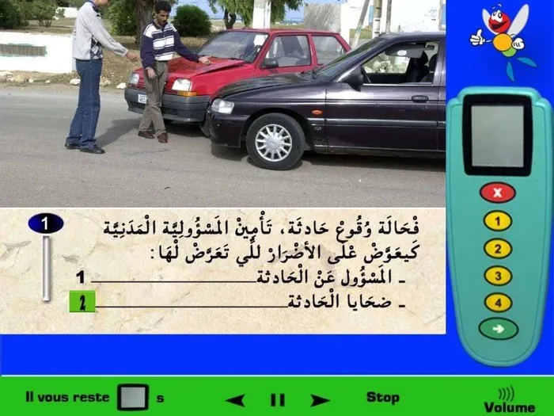
أثناء وقوع حادث، فإن تأمين المسؤولية المدنية يُعوِّض على الأضرار التي وقعت للشّخص الغير المسؤول على الحادثة الطّرقية أي ضحايا الحادث وليس المسؤول عن الحادث.
10
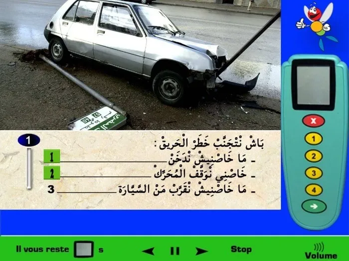
إذا وقت حادثة وحدثَ تسْريبْ للبنزين وكنت أدخّن قد يتسبب ذلك في خطر الحريق (السجارة والبنزين)، أيضا من الواجب عليّ إطفاء المحرّك لكي لا يبقى مشتغل ويسبب في أمر ما قد يؤدي إلى خطر الاحتراق كذلك. (بالنسبة لأنه لا يجب عليّ البقاء قرب السيّارة فهذا فعل خاطئ لأنني يجب أن أقوم بأفعال كما ذكرناها لكي لا تتطوّر الحادثة أكثر).
11
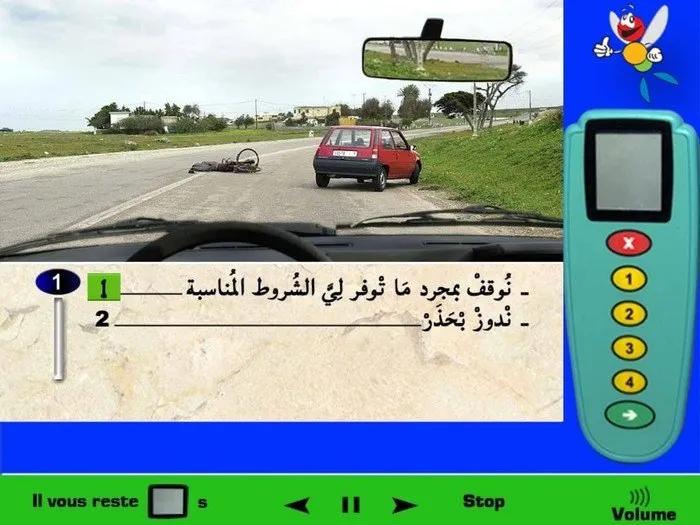
عندما أتواجد قرب حادثة سير ولا توجد سيارة إسعاف، فمن الواجب عليّ الوقوف لحماية مكان الحادث والتّنبيه إليه وإخبار الجهات المختصة بذلك، ولهذا يجب عليّ الوقوف في مكان يسمح لي بذلك لكي لا أعرقل حركة السّير أكثر.
12
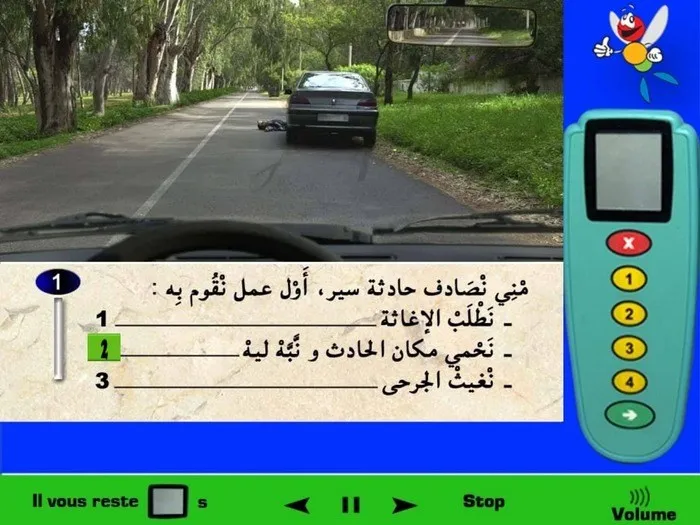
عندما أصادف حادثة سير فإن أول شيئ أقوم به هو حماية مكان الحادث والتّنبيه إليه لكي ينتبه السائقون الاخرون ولا تحدث حادثة سير أخرى.
13
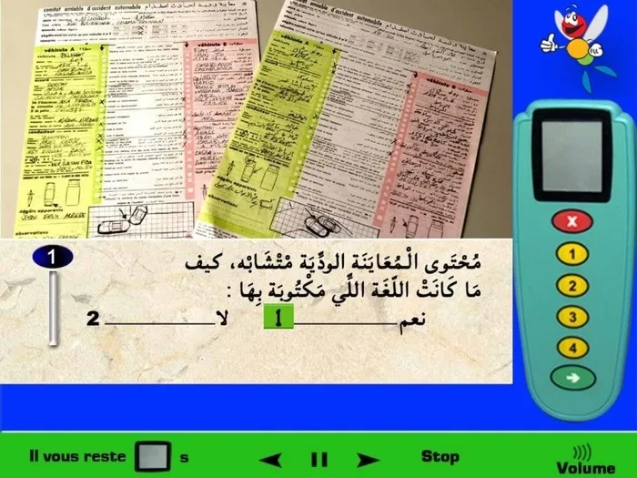
المعاينة الودّية تكون مكتوبة باللغة العربية أو الفرنسية، ومحتوى كل منهما يكون متشابه في المحتوى ولا يوجد فرق في محتوى المعاينة الودية بالعربية أو الفرنسية.
14
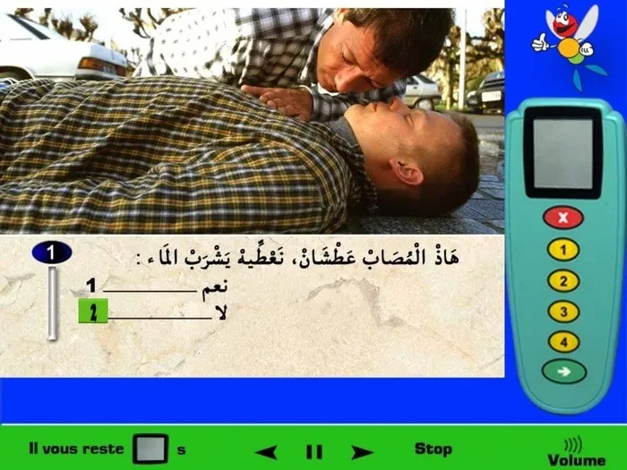
عندما يكون هنالك مصاب فلا نقوم بإعطائه الماء، لأن هذا الفعل قد يسبب له مضاعفات خطيرة وهو مصاب، لذلك المسؤول عن إعطاءه شيئ ما او لا هم رجال الإسعاف عند وصولهم.
15
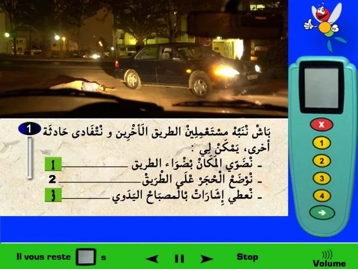
عندما أتواجد قرب حادثة سير في الفترة اللّيلية، فأول فعل أقوم بفعله هو إضاءة المكان لكي تظهر حادثة السّير بالنسبة للسائقين الاخرين لأننا في الليل، وأقوم بالتّنبيه بمصباح يدوي لو كنت أتوفّر عليه لكي ينتبه السائقون على أن هنالك شيئ ما. وكل هذه الأفعال تساعدنا على تفادي حادثة سير اخرى. (لا أقوم بوضع أحجار على الطّريق فهدا يشكّل خطر).
16
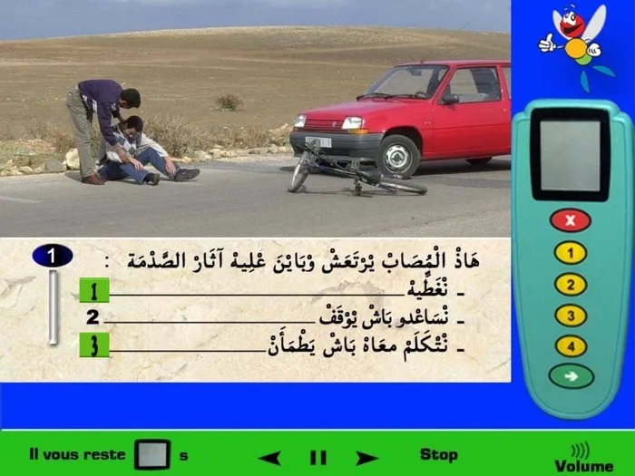
عندما نتواجد قرب مُصاب في حادثة سير وتظهر عليه صدمة الحادثة، فأقوم بتغطيته لو كنت أتوفّر على غطاء لأنه في بعض المرّات يصاب المصاب برعشة برد بسبب صدمة الحادث، وأيضا أتكلّم معه لكي يطمان ويعرف أن كل شيئ بخير. (لا أقوم بمساعدته للوقوف لأنه يمكن أن تكون لديه إصابة خطيرة ويجب انتظار وصول الإسعاف).
17
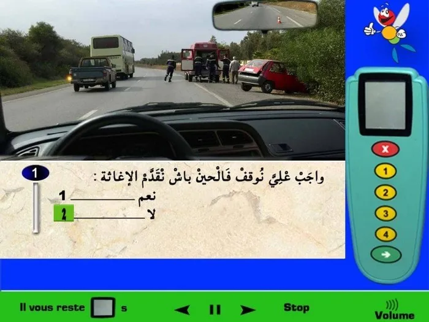
عندما أتواجد قرب حادثة طرقية وتكون سيارة الإسعاف موجودة، فلا يوجد سبب لكي أقف، سيارة الإسعاف سوف تتكلّف بالأمر. (أقوم بالوقوف عندما أكون أول واحد تواجد في الحادثة فقط، ولا أقف عندما أجد سيارة الإسعاف موجودة مسبقا).
18
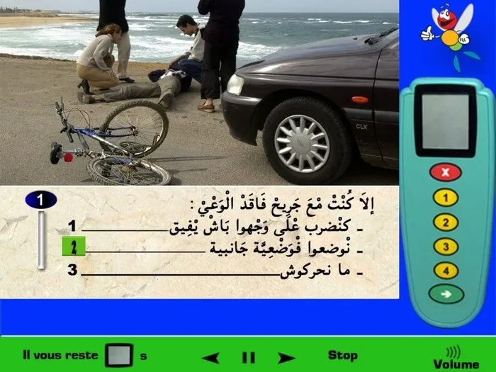
عندما أتواجد مع جريح فاقد الوعي فلا أقوم بضربه على وجهه فهذا فعل خطأ وخطير على صحتّه، لذلك فقط أقوم بوضعه على جانبه لأن هذه هي الوضعية الصّحيحة لمصاب.
19
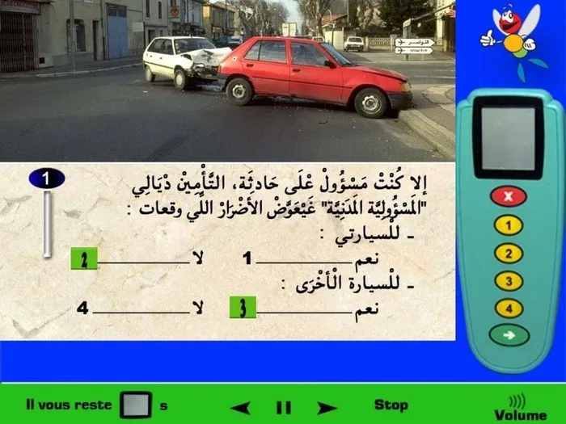
إذا كنت مسؤول عن وقوع حادثة، فإن تأمين المسؤولية المدنية يُعوِّض على الأضرار التي وقعت للشّخص الغير المسؤول على الحادثة الطّرقية أي ضحايا الحادث وليس المسؤول عن الحادث أي انا في هذه الحالة. يعني الشخص الذي سوف يأخد التّعويض هو الشخص الغير المسؤول عن حادثة السّير.
20
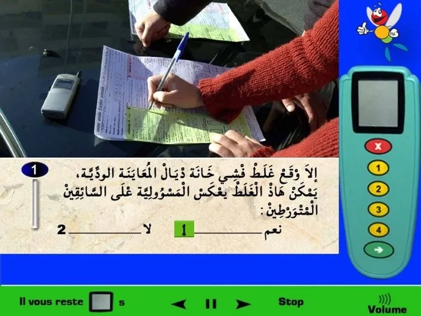
المعاينة الودّية قبل توقيعها فيجب على السائق أن يراجعها قبل التوقيع، لأنه عندما يقوم السائقين بتوقيعها فهم يوافقون على كل شيئ موجود في المعاينة الودّية، لذلك يجب التحقق من كل خانة في المعاينة الودّية لأنه وجود خطا لم تقم أنت به وقمت بالتوقيع فأنت تأكد هذا الأمر وسوف تفقد التّعويض لو لم تكن أنت المسؤول عن الحادثة